Propuesta editorial · Arrebol Weddings
Velvet Romance
Una boda íntima en una casona porfiriana de la Ciudad de México en 1950. Una ceremonia íntima en el salón, una cena de gala para pocos, y la noche que termina cuando los novios bailan solos la última canción.
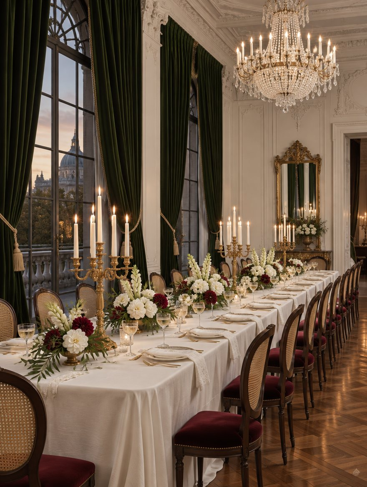
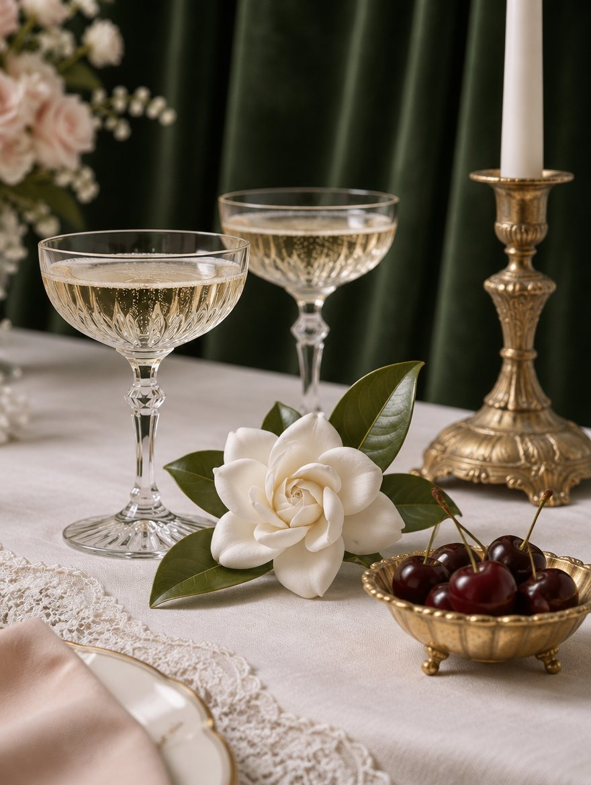
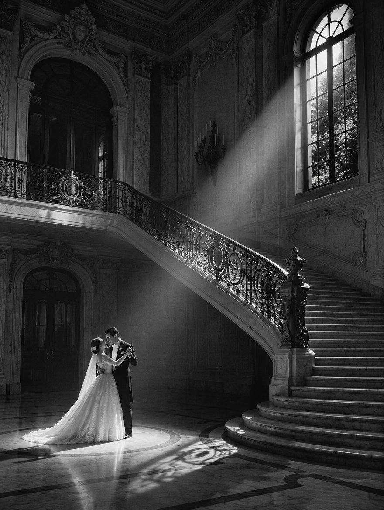
Paleta
Blancos limpios y terciopelo
La paleta sale de nuestro Editorial Las Mañanitas: el blanco del encaje, dos terciopelos de color como protagonistas y el oro como acento. El blanco y negro aparece solo al final de la noche.
Acto 1
Getting ready
La recámara de la casona con luz de día. Muros blancos, un diván de terciopelo verde, perlas, guantes y aretes de oro. Un disco sonando. El acto más claro del editorial.
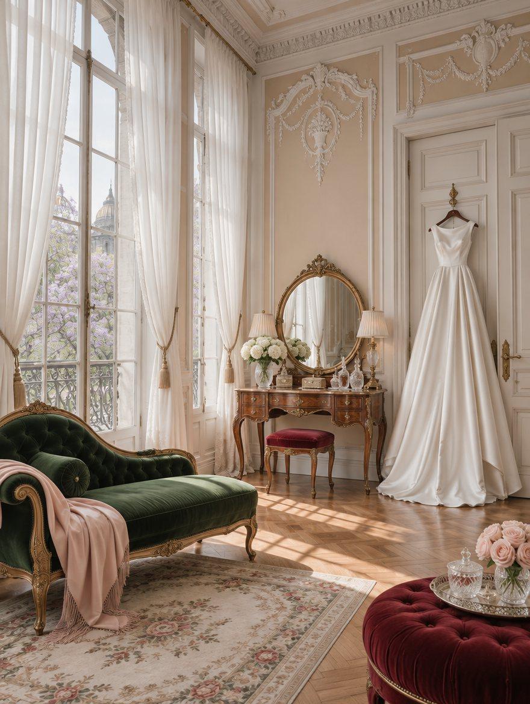
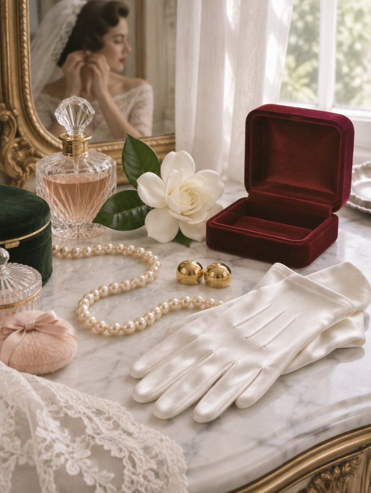
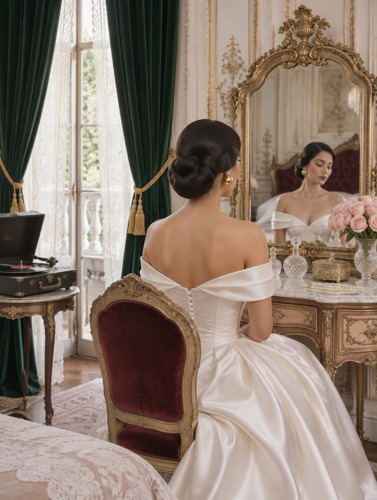
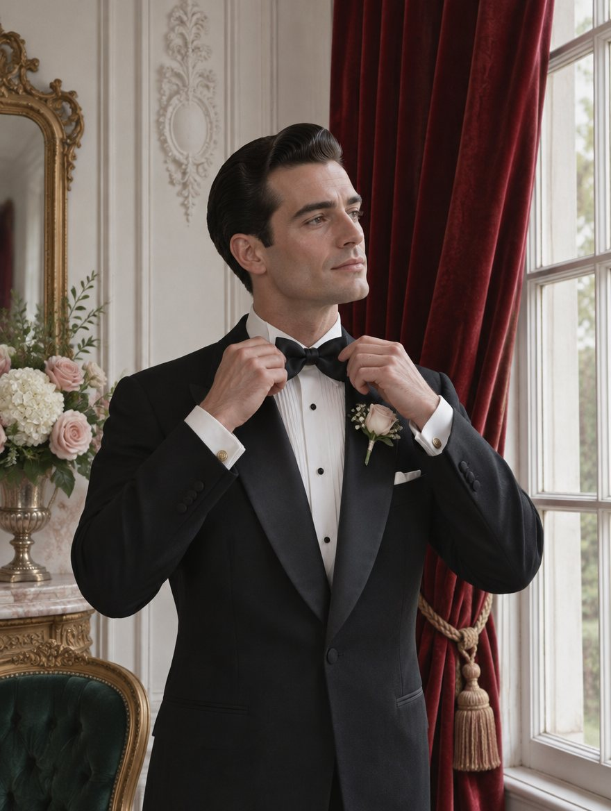
Acto 2
La ceremonia y la cena
El salón con cortinas de terciopelo verde de piso a techo, manteles blancos y candelabros de oro. Frente al telón de terciopelo vino, una ceremonia simbólica breve con los invitados de pie: las manos de los novios unidas con perlas y un listón de satén, y una vela de unión. De ahí, el brindis con copas coupe, el corte del pastel de gala y el primer baile entre las mesas.
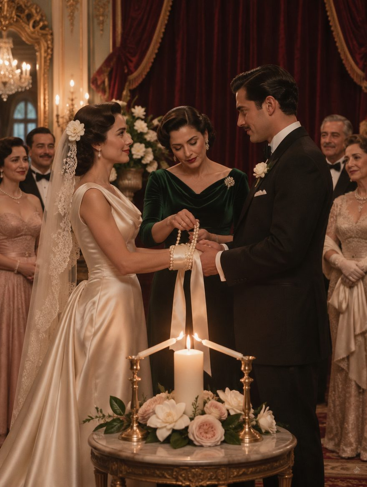
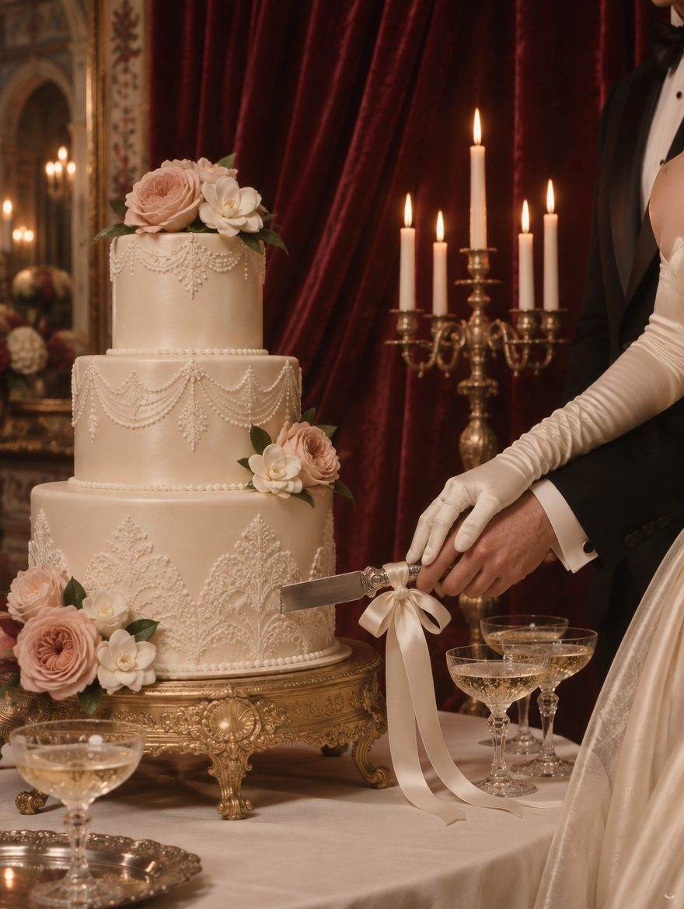
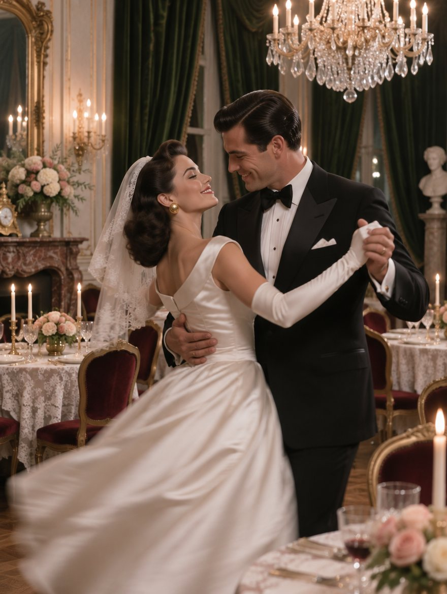
Acto 3
Después de la fiesta
Velas consumidas, pétalos en la duela, un guante caído. La escalera y el ventanal en blanco y negro, con claroscuro. Los novios bailan solos la última canción.
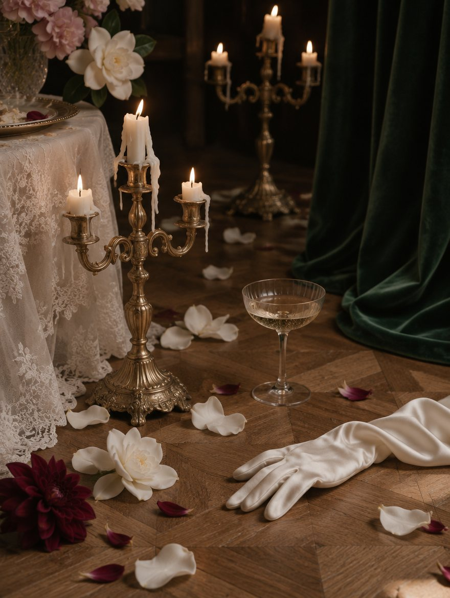
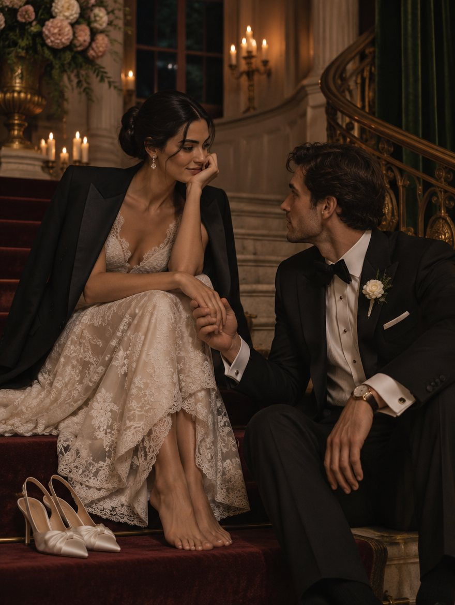
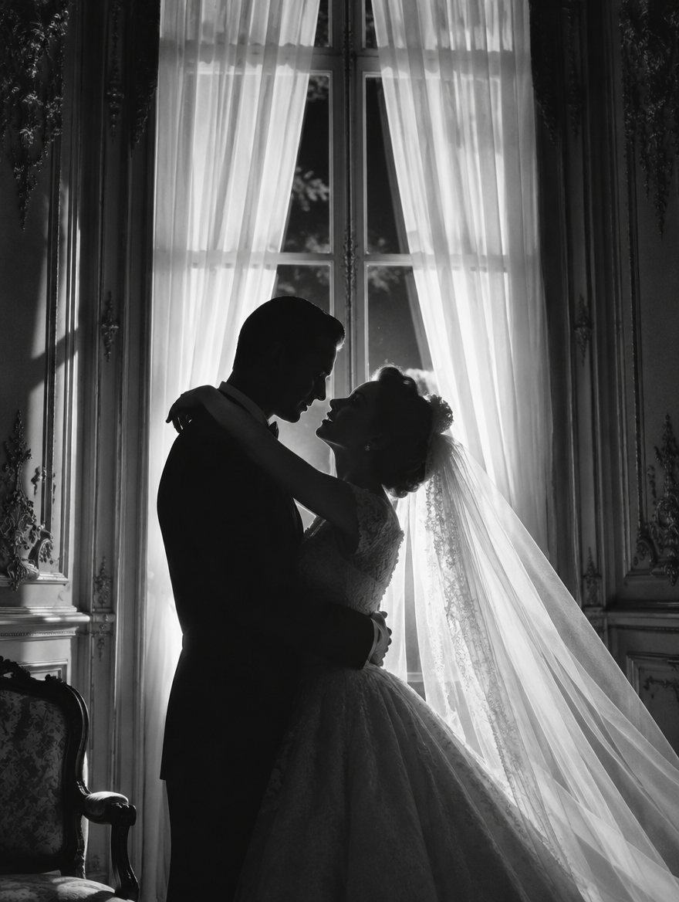
Equipo
Quién lo hace
- Foto y video Arrebol Weddings
- Vestidos de novia Daniela Ferrari Brides
- Maquillaje y peinado Jo Makeup Artist
- Diseño floral Blümingflür
- Planner y coordinación Casa Catán
- Ceremonia simbólica Liz Guerrero · VibraBonito33
- Venue The University Club of Mexico
- Modelos Por confirmar
- Mobiliario y mantelería Por confirmar
- Traje del novio Por confirmar
- Iluminación Por confirmar
- Pastel de gala Por confirmar
- Joyería, accesorios y lazo de perlas Por confirmar
Las imágenes de esta página son referencias generadas para el moodboard; no son fotografías de Arrebol Weddings.